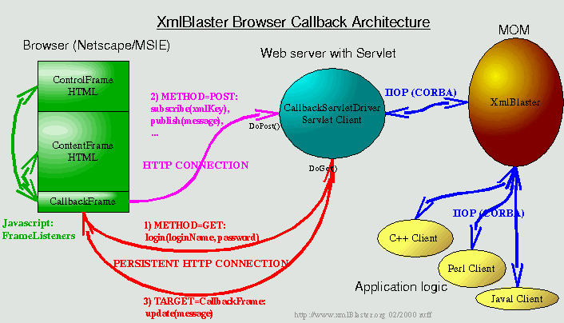

Last updated $Date: 2000/02/21 12:24:20 $ $Author: blaster $
The HTTP callback framework for xmlBlaster
| NOTE: This framework is work in progress, it is not yet finished for a production release. |
|
When distributing dynamic content over the internet, you usually choose an applet.
The applet connects to the server over CORBA (or any other protocol) and may
receive instant notification from the server. This framework addresses these issues. It establishes a persistent http connection to allow instant callbacks of xmlBlaster messages to the browser. |
|  |
|
The servlets connects to xmlBlaster using CORBA and to the browser using a persistent http connection (using a hidden frame to communicate).
The messages are directly transferred to the browser, which has a
Javascript based XML parser and notifies the interested browser frames about the callback.
For Servlet and Javascript examples have a look into the following directory
of the xmlBlaster distribution: xmlBlaster/src/java/org/xmlBlaster/protocol/httpYou need to access xmlBlaster with cvs or through cvsweb for these enhancements. The 0.73 release doesn't contain this code yet. Please remember, the code is at most alpha. |